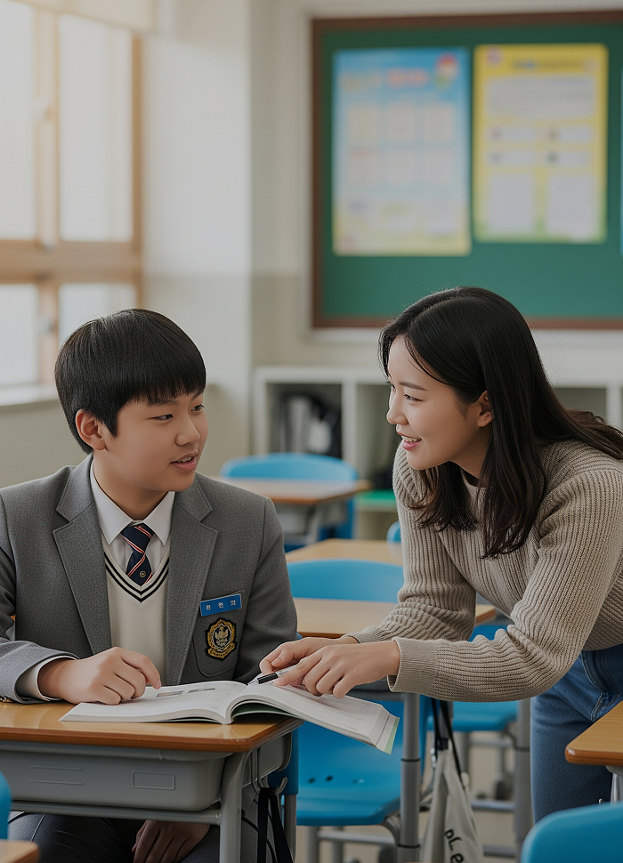
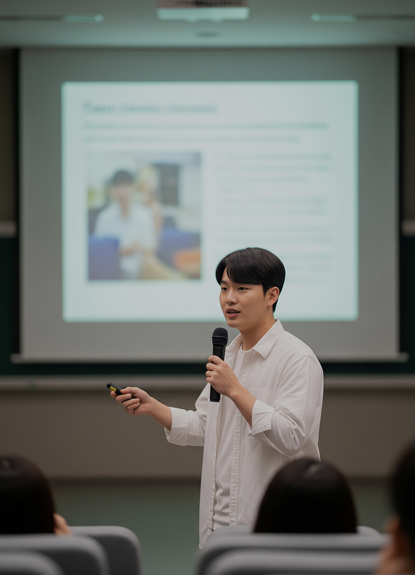
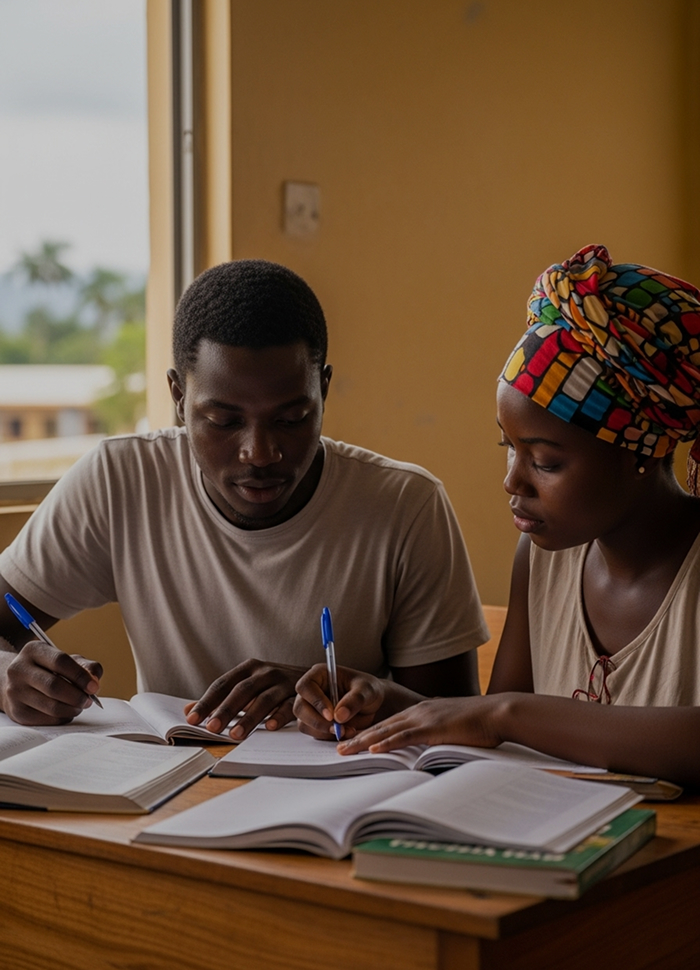
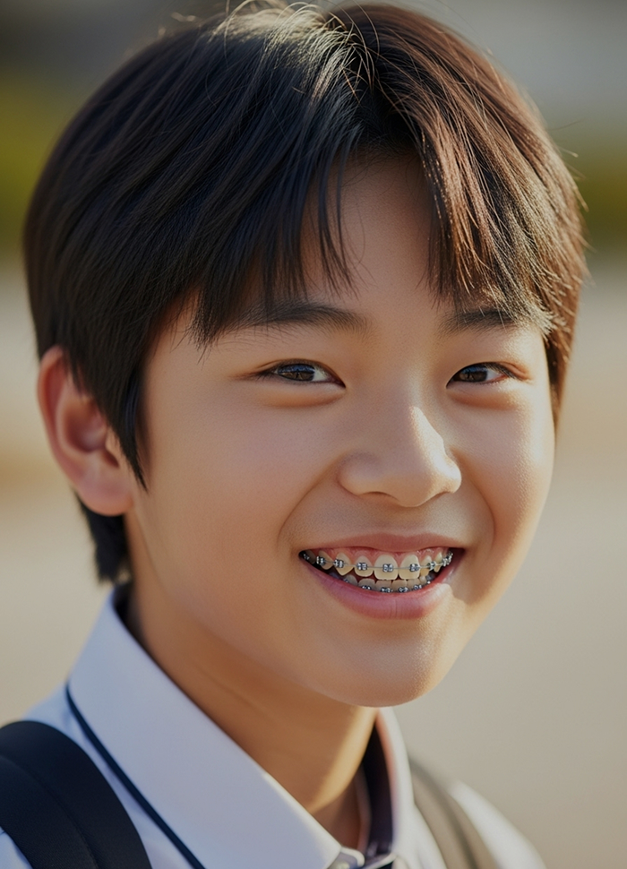

팝업
SDREAM PROJECT
미래를 향한
미래를 향한
아이들의 꿈을
이어가는 장학사업
-

멘토링 꿈
장학사업다양한 분야의 꿈과 가능성을 가진 청소년을 선발해, 꿈을 찾고 재능을 키울 수 있도록 장학금을 지원합니다.
-

리더 육성
장학사업재단 출신 꿈장학생 중 우수한 대학(원)생을 선발해, 리더로 성장하도록 장학금과 맞춤형 교육을 지원합니다.
-
배움터 교육
지원사업교육이 부족한 아동·청소년을 위해 지역 배움터와 함께 교육 프로그램과 복지 안전망을 지원합니다.
-

글로벌
장학사업한인 후손과 개발도상국 아동·청소년을 지원하고, 대학(원)생을 글로벌 리더로 성장시키는 교육사업입니다.
-
방과 후
학교 대상매년 1월, 교육부와 삼성꿈장학재단 등이 공동주관해 우수 방과후학교 프로그램과 교사, 단체를 시상합니다.
-

청소년 치아
교정 지원사업장학생 중 치아교정이 필요한 학생에게 대한치과교정학회와 바른이봉사회의 후원으로 무료 치료를 지원합니다.